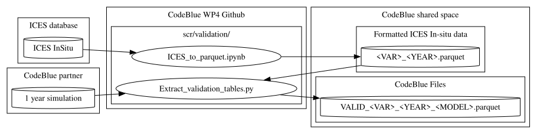

Validation Tables
The Validation Tables contain paired model and observation values used for the evaluation of model performance against in-situ measurements.
Purposes
Validation Tables address three main purposes:
- Enable direct comparison between model outputs and observational data.
- Support the computation of validation and skill assessment metrics.
- Preserve the full granularity of validation data for future analyses, alternative skill metrics, and model weighting methodologies.
Rather than storing only aggregated validation statistics, the validation tables retain individual observation-model pairs, allowing validation methods to be refined and recomputed as needed.
Format
Validation Tables are tabular files containing collocated observations and model values.
A tabular format is preferred to efficiently store the large number of observation-model pairs while preserving all information required for subsequent analyses.
Recommended filenames are structured as:
VALID_<VARIABLE>_<YEAR>_<MODEL>.csv
Observation sources
Validation observations are predefined and extracted from reference observational datasets. The current validation workflow is based on queries to the ICES database. Observation datasets are therefore fixed a priori to ensure consistency across participating models.
Variables
The validation tables currently include the following variables:
| Variable | Unit |
|---|---|
| Oxygen | mmol.O₂/m³ |
| NOx | mmol.N/m³ |
| NH₄ | mmol.N/m³ |
| PO₄ | mmol.P/m³ |
| SiO | mmol.Si/m³ |
| Chlorophyll | mg Chl/m³ |
| Temperature | °C |
| Salinity | psu |
| Secchi depth | m |
Additional variables may be included if required by specific validation exercises.
Table structure
Each record corresponds to a single observation and its associated model value.
The expected table structure is:
| Model Name | Variable | Depth | Lon | Lat | Date | Obs. Value | Mod. Value |
|---|---|---|---|---|---|---|---|
| ... | ... | ... | ... | ... | ... | ... | ... |
Where:
- Model Name identifies the model simulation.
- Variable identifies the observed quantity.
- Depth is the observation depth.
- Lon and Lat provide the observation location.
- Date corresponds to the observation timestamp.
- Obs. Value is the observed measurement.
- Mod. Value is the corresponding model value extracted at the same location, depth, and time.
Methodological considerations
The validation tables are intended to preserve the highest possible level of detail while limiting storage requirements compared with full three-dimensional model outputs.
This approach enables:
- Computation of standard validation metrics.
- Development of alternative skill assessment methods.
- Recalculation of validation statistics without rerunning model simulations.
- Future refinement of model weighting and ensemble methodologies.
Scripts

Related scripts are located in ./scr/validation/
Example file
..TO BE COMPLETED..